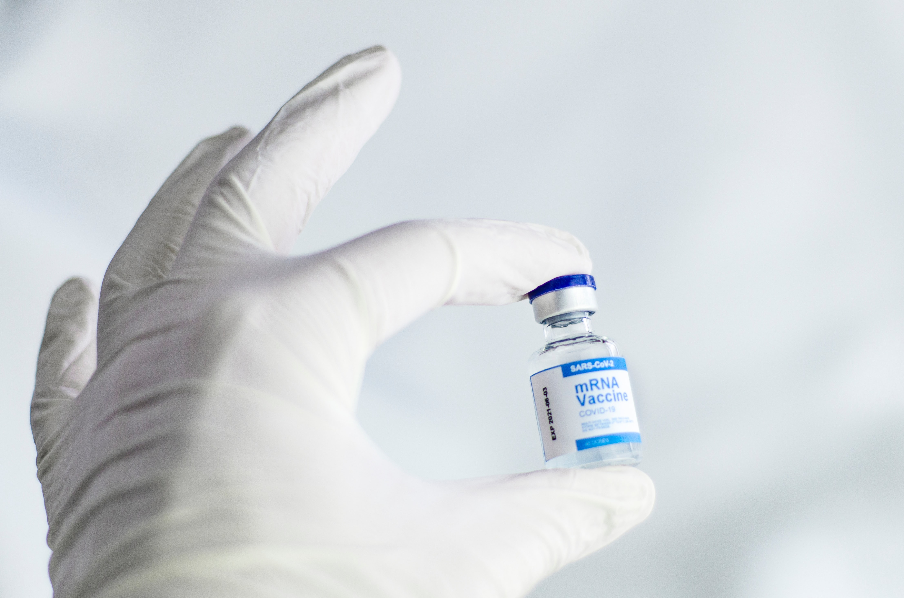

Tentang
Vaksin COVID-19 yang tengah dikembangkan ada bermacam-macam. Ada vaksin yang memanfaatkan virus Corona yang telah dimatikan atau dilemahkan, ada juga vaksin yang memanfaatkan teknologi rekayasa genetika. Salah satu contoh jenis vaksin tersebut adalah vaksin mRNA.
Akhir-akhir ini, sebagian masyarakat mungkin sering mendengar pemberitaan terkait pengembangan vaksin sebagai salah satu solusi untuk menanggulangi pandemi COVID-19. Namun, sebagian masyarakat Indonesia mungkin masih belum memahami dan masih bertanya-tanya mengenai efektivitas vaksin dan bagaimana proses pengembangan vaksin sebelum akhirnya dapat digunakan.
Layaknya obat dan vaksin lainnya, pengembangan vaksin COVID-19 harus melalui tiga tahap uji klinis. Setelah memenuhi ketiga tahap uji klinis tersebut dan dinyatakan efektif serta aman digunakan, vaksin COVID-19 baru bisa mendapatkan izin edar dari Badan Pengawas Obat dan Makanan (BPOM).
Saat ini, sudah ada vaksin COVID-19 yang memasuki uji klinis tahap III di Indonesia. Penelitian terhadap vaksin COVID-19 tersebut melibatkan 1.620 sukarelawan. Bila riset ini berjalan lancar, vaksin COVID-19 diprediksi dapat tersedia dan digunakan secara luas oleh masyarakat Indonesia pada tahun 2022.